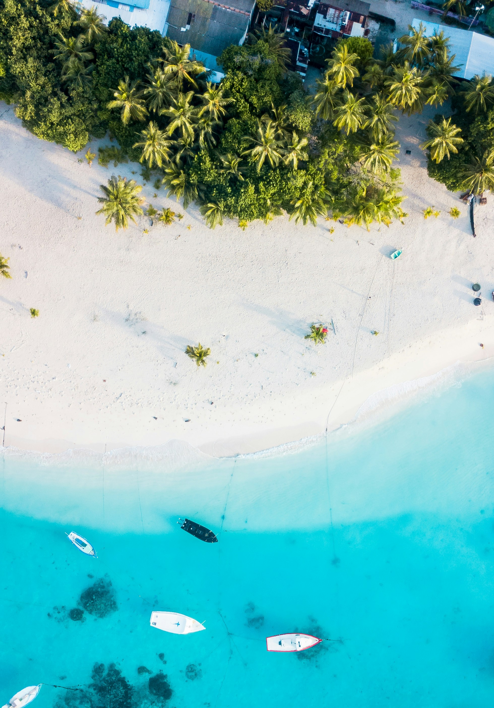
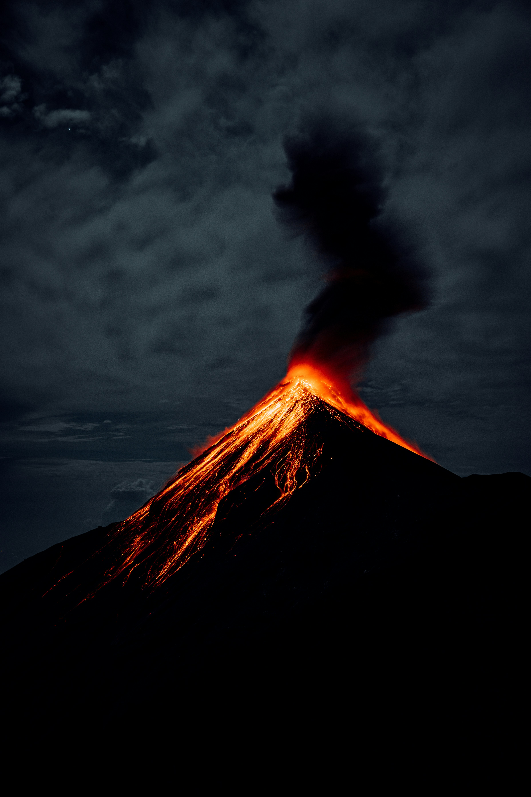

Yellow Leaf Bay

The Volcano

Taniti City
Taniti is small — under 500 square miles. Sandy beaches turn into rocky cliffs. Rainforests are thick enough to actually get lost in. Mountains rise toward a volcano that's technically active but mostly just smokes a little. About 20,000 indigenous Tanitians live here and have for generations.
The economy used to be all fishing and farming. Tourism is new-ish and still being figured out. The island's trying to welcome visitors without turning into every other tourist trap. So far, it's working.

Yellow Leaf Bay

The Volcano
Taniti City
One hostel. One big resort. A bunch of family-run hotels and B&Bs in between. Everything's government inspected, so you won't end up in a horror movie situation. Pick what fits your budget.
Ten restaurants total. Five do local fish and rice (fresh, simple, good). Three serve American food for homesick tourists. Two do Pan-Asian stuff. There are also a couple supermarkets, some grocery stores, and a 24-hour convenience store for when you need snacks at 3 AM.
Beaches, rainforest hikes, and volcano visits are the main draw. But there's also a history museum, fishing charters, snorkeling, zip-lining, pubs (including a microbrewery), a nightclub, movies, helicopter rides, an arcade, art galleries, and bowling. A golf course opens next year if you're into that.
Most of the nightlife is in Merriton Landing on the north side of Yellow Leaf Bay. Most tourists stay in Taniti City, which has the beaches and historic buildings. Boat tours, bus tours, and guided hikes are all easy to book.
Almost everyone flies in through the small airport (small jets and propeller planes only for now, but they're expanding). A cruise ship docks once a week for overnight stays.
Public buses run in Taniti City from 5 AM to 11 PM. Private buses cover the rest of the island. Taxis work in the city. You can rent cars near the airport or grab a bike (helmets required by law). Both Taniti City and Merriton Landing are walkable if you're not in a rush.
Money: U.S. dollars. Many places take euros and yen too. Credit cards work almost everywhere.
Power: 120 volts. Same as the U.S.
Language: Younger people speak English. Older folks in rural areas, not so much.
Drinking: Age is 18. Can't buy alcohol between midnight and 9 AM. Nobody really cares otherwise.
Healthcare: One hospital, a few clinics. Staff speaks multiple languages.
Safety: Violent crime is rare. Pickpocketing happens sometimes. Just pay attention.
Holidays: The island celebrates a lot of them. Stuff closes. Check the calendar.